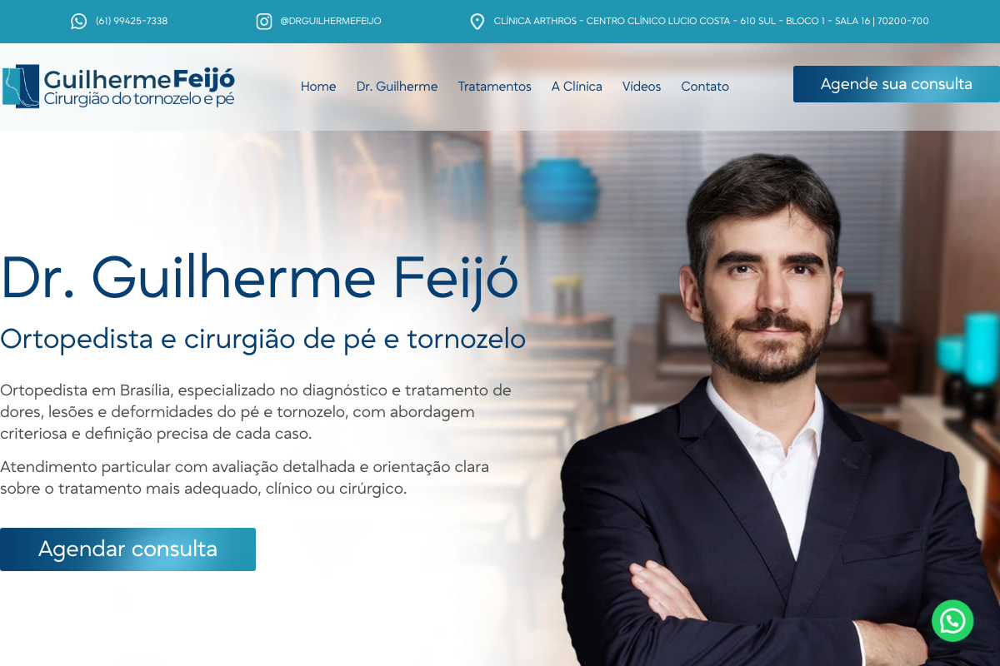
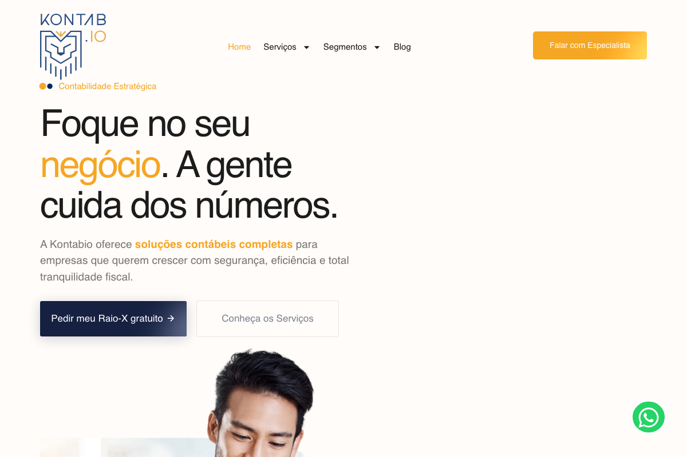
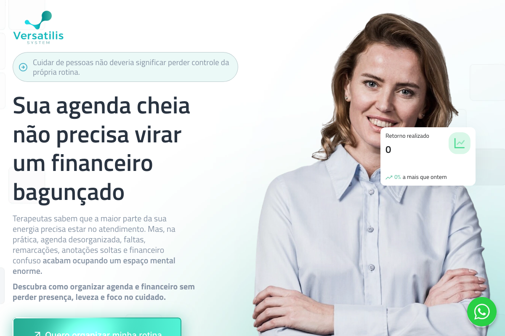
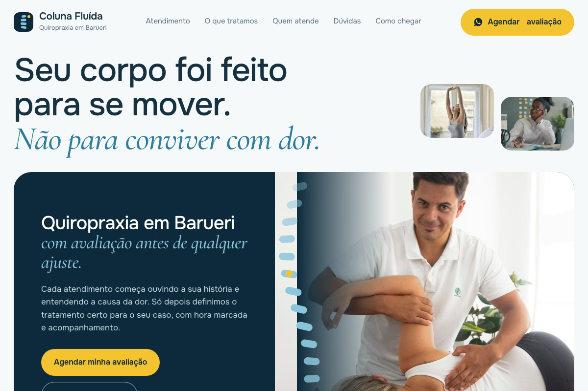

Dr. Guilherme Feijó
Ortopedia e traumatologia · Brasília, DF
Site de consultório com cerca de 22 páginas — uma para cada tratamento clínico e cada cirurgia. O botão de agendar consulta acompanha o visitante em todas as seções.
Ver siteLanding pages e sites para clínicas, consultórios e negócios locais. Você aprova o layout em 48 horas e recebe o site publicado e funcionando dentro de uma semana.

Oito projetos no ar. Clínicas, consultórios, indústria e software — todos construídos para a mesma coisa: transformar visita em conversa.
Ortopedia e traumatologia · Brasília, DF
Site de consultório com cerca de 22 páginas — uma para cada tratamento clínico e cada cirurgia. O botão de agendar consulta acompanha o visitante em todas as seções.
Ver site
Contabilidade · São Paulo, SP
Escritório que atende PMEs, profissionais da saúde e investidores. A oferta de um diagnóstico gratuito puxa o visitante para o formulário logo na primeira dobra.
Ver site
Indústria de cosméticos · Atibaia, SP
Landing B2B para terceirização de produção. Explica o processo em cinco etapas, mostra as certificações e fecha com orçamento respondido em 24 horas.
Ver site
Consórcios e crédito · São Paulo, SP
Catálogo de cartas de consórcio contempladas, com filtro por administradora e um simulador que soma cartas e calcula crédito, entrada, saldo devedor e parcelas.
Ver site
Software de gestão para clínicas · Barueri, SP
Landing segmentada para terapeutas. Percorre a dor da rotina, o impacto no dia a dia e a solução, terminando em uma demonstração de 30 minutos.
Ver site
Odontologia · Jaboatão dos Guararapes, PE
Clínica de odontologia e estética orofacial. Seis blocos de tratamento, equipe apresentada por especialidade e agendamento integrado a um canal de atendimento.
Ver site
Quiropraxia e terapias manuais · Barueri, SP
Cada queixa — lombar, cervical, ciático, postura — abre o WhatsApp com a mensagem já escrita, então o paciente chega dizendo exatamente o que sente.
Ver site
Nutrição · Rio de Janeiro, RJ
Site de conteúdo com blog filtrável por tema, área de receitas e vitrine de e-books e cursos, com captura de e-mail por newsletter.
Ver siteQuatro passos, sem reunião desnecessária. Você aprova o desenho antes de qualquer linha de código ser escrita.
Trabalho com WordPress e Elementor, Framer e HTML/CSS. A escolha depende do que o site precisa fazer, não do que é mais rápido para mim.
Ou do seu Instagram. Em até 10 minutos eu respondo o que daria para fazer, quanto custa e em quanto tempo fica pronto. Sem compromisso e sem reunião.